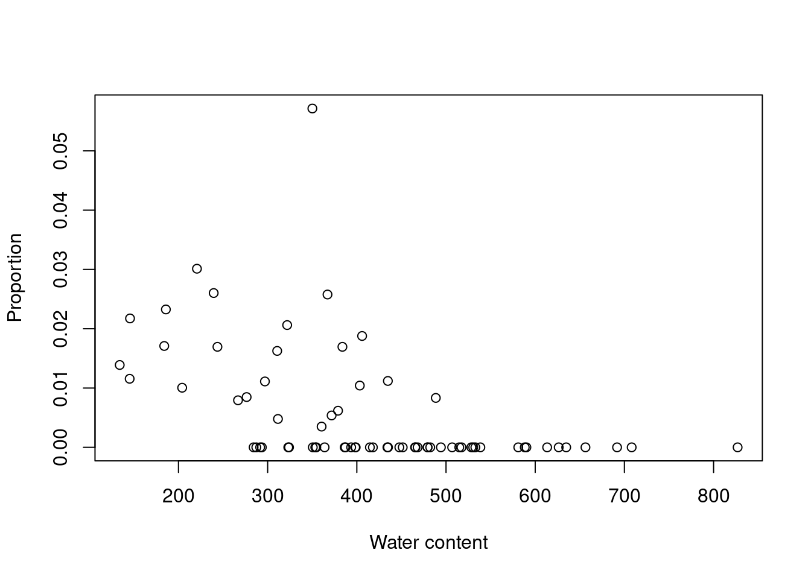

Chapitre 4 Un exemple avec des vrais données
Utilisons nos connaissances des modèles linéaires généraux pour explorer la relation entre les variables dans le jeu de données de mites Orbatid.
Commençons par charger les données dans R:
# Use setwd() to set your working directory
mites <- read.csv("data/mites.csv", stringsAsFactors = TRUE)Le jeu de données que vous avez chargé est un échantillon du jeu de données mites Oribatid (Acari,Oribatei), qui a été utilsé pour plusieurs textes (e.g. Borcard,
Gillet & Legendre, Numerical Ecology with R), et est disponible avec le package vegan.
Le jeu de données mites contient 70 échantillons de mousses et mites récoltés par la Station de Biologie de l’Université de Montréal.
] provenant de la municipalité de Saint-Hippolyte, Québec (Canada). Il contient 5 variables environmentales, l’abondance de la mite Galumna sp., et l’abondance totale des mites.
Nous pouvons examiner la structure du jeu de données avec les fonctions head() and str() functions:
head(mites)## Galumna pa totalabund prop SubsDens WatrCont Substrate Shrub Topo
## 1 8 1 140 0.057142857 39.18 350.15 Sphagn1 Few Hummock
## 2 3 1 268 0.011194030 54.99 434.81 Litter Few Hummock
## 3 1 1 186 0.005376344 46.07 371.72 Interface Few Hummock
## 4 1 1 286 0.003496503 48.19 360.50 Sphagn1 Few Hummock
## 5 2 1 199 0.010050251 23.55 204.13 Sphagn1 Few Hummock
## 6 1 1 209 0.004784689 57.32 311.55 Sphagn1 Few Hummockstr(mites)## 'data.frame': 70 obs. of 9 variables:
## $ Galumna : int 8 3 1 1 2 1 1 1 2 5 ...
## $ pa : int 1 1 1 1 1 1 1 1 1 1 ...
## $ totalabund: int 140 268 186 286 199 209 162 126 123 166 ...
## $ prop : num 0.05714 0.01119 0.00538 0.0035 0.01005 ...
## $ SubsDens : num 39.2 55 46.1 48.2 23.6 ...
## $ WatrCont : num 350 435 372 360 204 ...
## $ Substrate : Factor w/ 7 levels "Barepeat","Interface",..: 4 3 2 4 4 4 4 2 3 4 ...
## $ Shrub : Factor w/ 3 levels "Few","Many","None": 1 1 1 1 1 1 1 2 2 2 ...
## $ Topo : Factor w/ 2 levels "Blanket","Hummock": 2 2 2 2 2 2 2 1 1 2 ...Notre première vue su jeu de données nous permet déjà de séparer les variables potentielles en variables réponses ou variables prédictrices:
Variables réponses:
- Occurrence:
pa - Abondance:
Galumna - Fréquence relative ou Proportions:
prop
Variables prédictrices:
- Densité du substrat:
SubsDens - Contenu en eau (du sol):
WatrCont - Substrat:
Substrate - Arbustes:
Shrub - Topographie:
Topo
Quelles questions pouvons-nous poser avec ces variables?
Est-ce que l’environnement permet de prédire l’abondance, l’occurrence, ou la proportion de Galumna sp.?
Pour répondre à ces questions nous pouvons élaborer plusieurs fonctions:
\(\text{Abondance} = f(\text{Contenu en eau}, \epsilon)\)
\(\text{Proportion} = f(\text{Contenu en eau}, \epsilon)\)
\(\text{Occurrence} = f(\text{Substrat}, \epsilon)\)
\(\text{Abondance} = f(\text{Topographie}, \epsilon)\)
\(\text{Occurrence} = f(\text{Arbustes}, \epsilon)\)
\(\text{Fréquence relative} = f(\text{Topographie}, \epsilon)\)
\(\text{Occurrence} = f(\text{Densité du substrat}, \epsilon)\)
\(\text{Abondance} = f(\text{Substrat}, \epsilon)\) ]
Pouvons-nous voir une relation entre Galumna et une ou plusieurs des cinq variables environnementales?
Essayons en cherchant si la communauté de Galumna (abondance, occurrence and fréquence relative) varie en fonction du contenu en eau.
Nous pouvons commencer en représentant les trois varaibles réponses avec la variable prédictrice:
plot(Galumna ~ WatrCont, data = mites, xlab = "Water content",
ylab = "Abundance")
boxplot(WatrCont ~ pa, data = mites, xlab = "Presence/Absence",
ylab = "Water content")
plot(prop ~ WatrCont, data = mites, xlab = "Water content", ylab = "Proportion")
En effet, Galumna semble varier négativement avec la fonction de WatrCont, i.e. Galumna sp. préfèrerait des sites plus secs.
Nous pouvons aller plus loin encore en testant un modèle linéaire avec Galumna, pa, ou prop en fonction de WatrCont
# Fit the models
##
# Abundance model
lm.abund <- lm(Galumna ~ WatrCont, data = mites)
##
# Presence-absence model
lm.pa <- lm(pa ~ WatrCont, data = mites)
##
# Proportion model
lm.prop <- lm(prop ~ WatrCont, data = mites)Nous pouvons vérifier si la relation est significative avec sa sortie du modèle:
# Check the model output with the summary() function
summary(lm.abund)##
## Call:
## lm(formula = Galumna ~ WatrCont, data = mites)
##
## Residuals:
## Min 1Q Median 3Q Max
## -1.7210 -0.8236 -0.3270 0.3910 6.6772
##
## Coefficients:
## Estimate Std. Error t value Pr(>|t|)
## (Intercept) 3.439349 0.555825 6.188 3.98e-08 ***
## WatrCont -0.006045 0.001280 -4.723 1.21e-05 ***
## ---
## Signif. codes: 0 '***' 0.001 '**' 0.01 '*' 0.05 '.' 0.1 ' ' 1
##
## Residual standard error: 1.514 on 68 degrees of freedom
## Multiple R-squared: 0.247, Adjusted R-squared: 0.2359
## F-statistic: 22.31 on 1 and 68 DF, p-value: 1.206e-05summary(lm.pa)##
## Call:
## lm(formula = pa ~ WatrCont, data = mites)
##
## Residuals:
## Min 1Q Median 3Q Max
## -0.61320 -0.30889 -0.05498 0.30247 0.80073
##
## Coefficients:
## Estimate Std. Error t value Pr(>|t|)
## (Intercept) 1.1892142 0.1431306 8.309 6.03e-12 ***
## WatrCont -0.0020263 0.0003296 -6.148 4.68e-08 ***
## ---
## Signif. codes: 0 '***' 0.001 '**' 0.01 '*' 0.05 '.' 0.1 ' ' 1
##
## Residual standard error: 0.3897 on 68 degrees of freedom
## Multiple R-squared: 0.3573, Adjusted R-squared: 0.3478
## F-statistic: 37.8 on 1 and 68 DF, p-value: 4.677e-08summary(lm.prop)##
## Call:
## lm(formula = prop ~ WatrCont, data = mites)
##
## Residuals:
## Min 1Q Median 3Q Max
## -0.010208 -0.004927 -0.002056 0.003240 0.049252
##
## Coefficients:
## Estimate Std. Error t value Pr(>|t|)
## (Intercept) 2.020e-02 3.294e-03 6.133 4.98e-08 ***
## WatrCont -3.516e-05 7.586e-06 -4.635 1.67e-05 ***
## ---
## Signif. codes: 0 '***' 0.001 '**' 0.01 '*' 0.05 '.' 0.1 ' ' 1
##
## Residual standard error: 0.008971 on 68 degrees of freedom
## Multiple R-squared: 0.2401, Adjusted R-squared: 0.2289
## F-statistic: 21.49 on 1 and 68 DF, p-value: 1.665e-05# Extracting the Pr(>|t|)
summary(lm.abund)$coefficients[, 4]## (Intercept) WatrCont
## 3.981563e-08 1.206117e-05summary(lm.pa)$coefficients[, 4]## (Intercept) WatrCont
## 6.030252e-12 4.676755e-08summary(lm.prop)$coefficients[, 4]## (Intercept) WatrCont
## 4.977432e-08 1.665437e-05En effet, il y a une forte relation significative avec les 3 variables réponses! Mais attendez… Nous avons oublier de faire la chose la plus important! Soit de vérifier les conditions d’application du modèle linéaire!